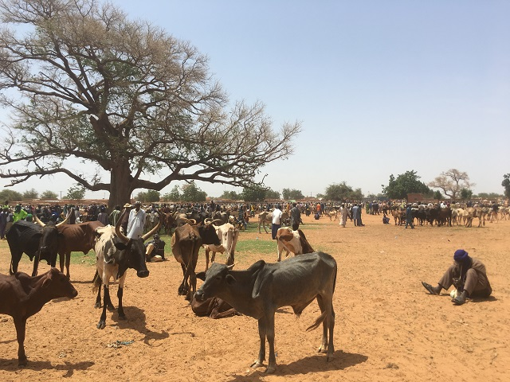
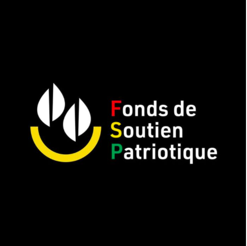
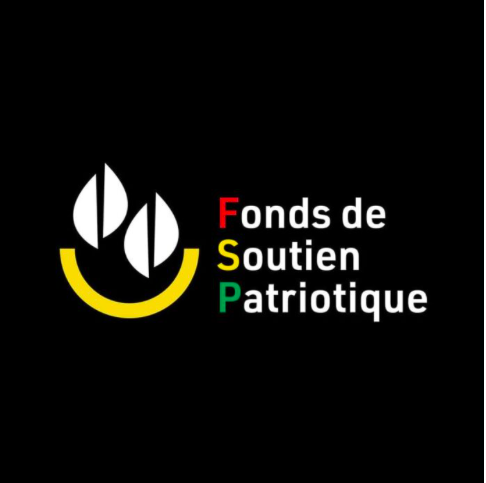
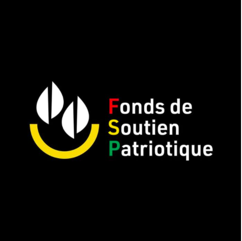

FAITENT VOTRE CHOIX !


SOUTIENT LA LUTTE CONTRE LE TERRORISM !
PAYEZ VOS MOUTON DE TABASKI AVEC MA MOUTON DE TABASKI

 


🇧🇫💔 Nos éleveurs sont parmi les plus touchés par le terrorisme : familles brisées , troupeaux volés, vies détruites... Chez Ma Mouton de Tabaski, on dit STOP! Nous achetons directement chez eux, dans leurs villages pour leur éviter les routes dangereuses et leur redonner espoir. 🐑🤝
🚚✨ En allant à leur rencontre, on sauve leurs animaux, on double leurs revenus et on leur rend leur dignité. Chaque achat chez nous = un soutien concret à ceux qui nourrissent notre pays 🙌🌾
🯠50 % de nos bénéfices vont au Fonds de Soutien à la Défense de la Patrie. Oui, chaque mouton que tu achètes = un geste fort contre le terrorisme Tu deviens acteur de la paix au Faso ! 💪🔥
🕌🎁 💂‍♂️Cette Tabaski, on s'engage à offrir jusqu'à 1000 moutons à nos FDS/VDP et à leurs familles Toi aussi, ajoute ton geste au moment de l'achat. Célèbre la Tabaski avec foi, fierté et solidarité ! 👩‍👧‍👦 🇧🇫❤️
💪🾠RÉVEILLEZ VOTRE ESPRIT DE SACRIFICE CETTE ANNÉE ! 💪ğŸ¾
- 🐏Ajoute un mouton à la fin de ton achat pour l’offrir à nos FDS et VDP, ces héros qui se battent pour notre paix ❤️💂‍♂️
🇧🇫 En achetant ton mouton chez nous, tu soutiens la lutte contre le terrorisme 🕊️